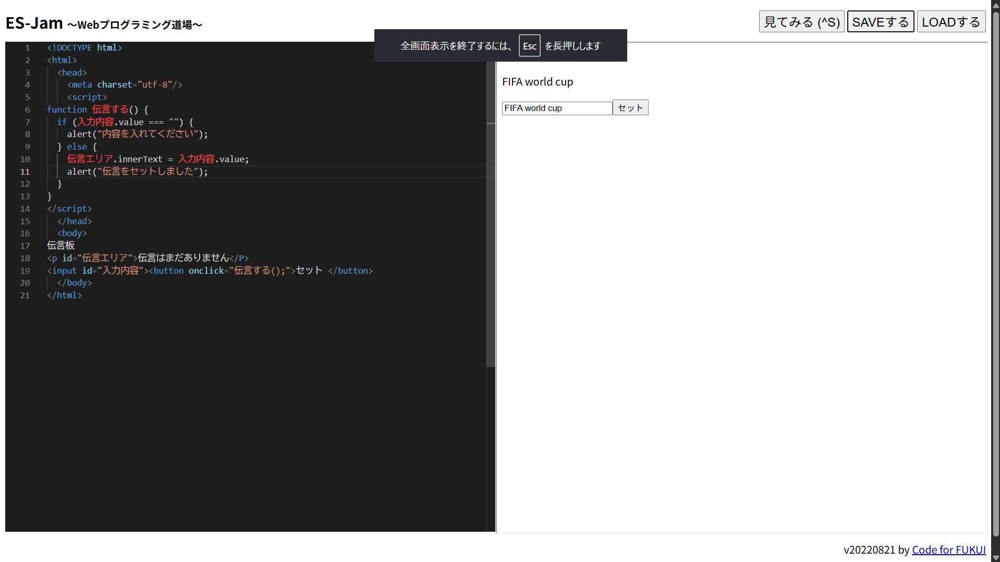

3-2 JavaScript体験：伝言プログラムを作る

伝言板
1.内容
htmlやbody、headなどの英語や括弧やイコールなどの記号をつかうことで伝言板を作成することができた。
伝言板はなにも入力していないときと、なにかを入力したときででるアラートが違うように設定した
2.感想
最初は先生が言ったとおりに画面上の文字を写していて何を作っているのかわからなかったが、最後にそれぞれの英語や記号の意味を伝えてくれたのでそれぞれのワードがどのような機能をするのかを理解した。